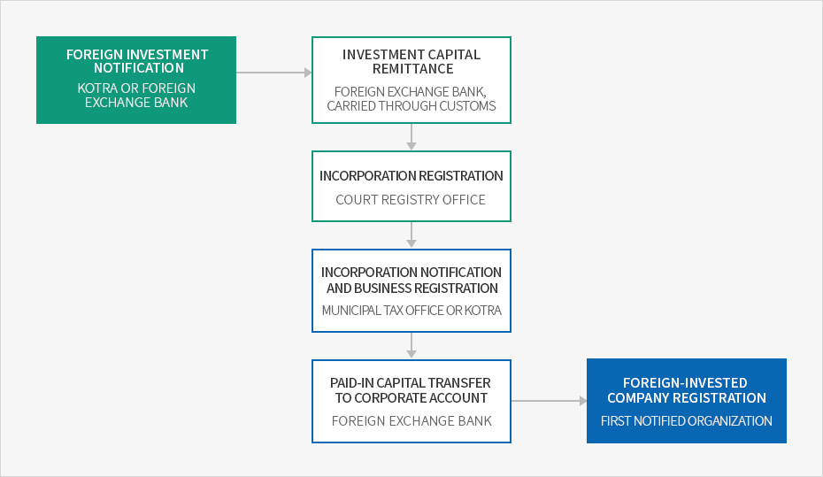

Ministry of Trade, Industry and Energy’s Policies for Foreign Investment Zones, etc.
- Home
- Investment Environment
- Support Programs
- Ministry of Trade, Industry and Energy’s Policies for Foreign Investment Zones, etc.
Foreign Direct Investment
Foreign direct investment (FDI) refers to investment made by a foreigner for the purpose of establishing a continued economic relationship with a domestic business such as participation in management and technological cooperation.Types of FDI
- Acquisition of stocks or shares of domestic businesses
- Contribution to non-profit corporations
- Long-term loans (available after equity investment or foreign-invested company registration)
FDI Procedure
The foreign investment procedure is largely divided into four steps: foreign investment notification, investment capital remittance, incorporation registration & business registration, and foreign-invested company registration.


- Foreign investment notification (KOTRA or foreign exchange bank)
- Investment capital remittance (foreign exchange bank, carried through customs)
- Incorporation registration (court registry office)
- Incorporation notification and business registration (municipal tax office or KOTRA)
- Paid-in capital transfer to corporate account (foreign exchange bank)
- Foreign-invested company registration (first notified organization)

Investment Consulting Center (KOTRA)
Contact 1900-7119- Business hours : Monday–Friday 9:00 ~ 18:00 (Lunch break 12:00 ~ 13:00)
- Fax : (82-2)3497-1611
- Languages : Korean, English, Chinese, Japanese